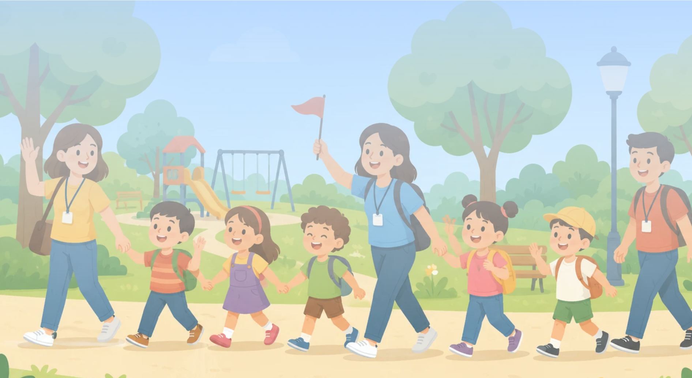
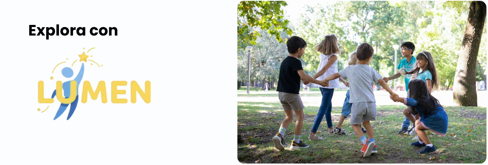
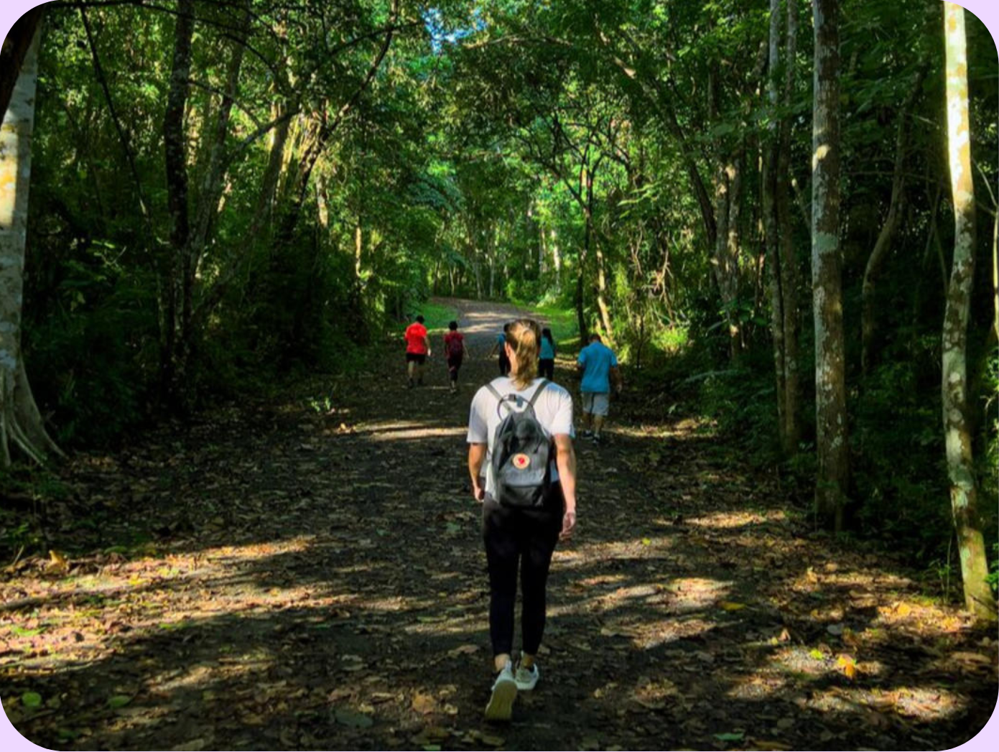
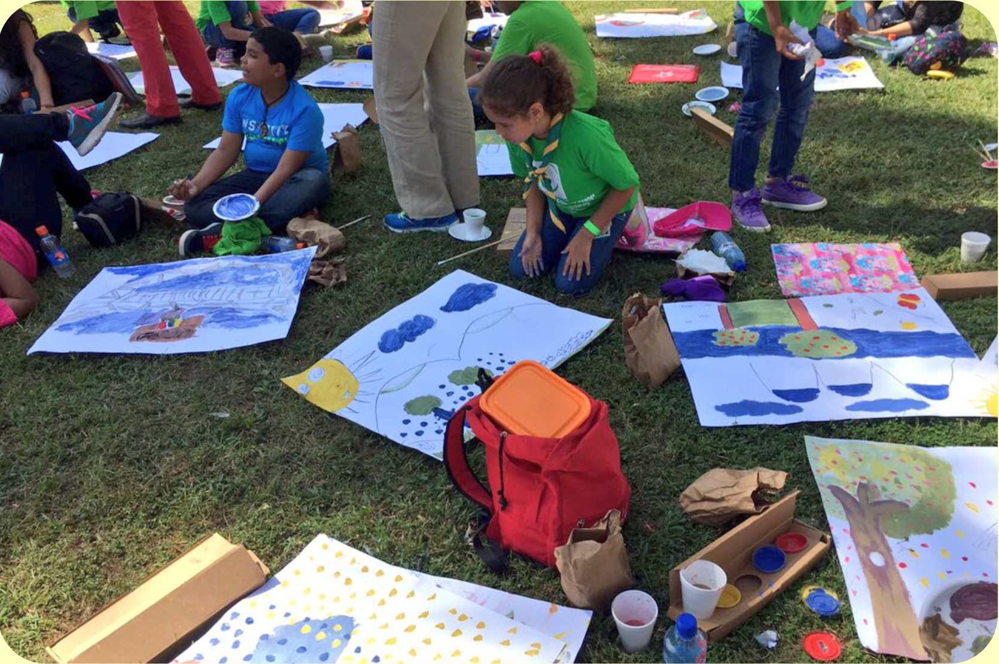
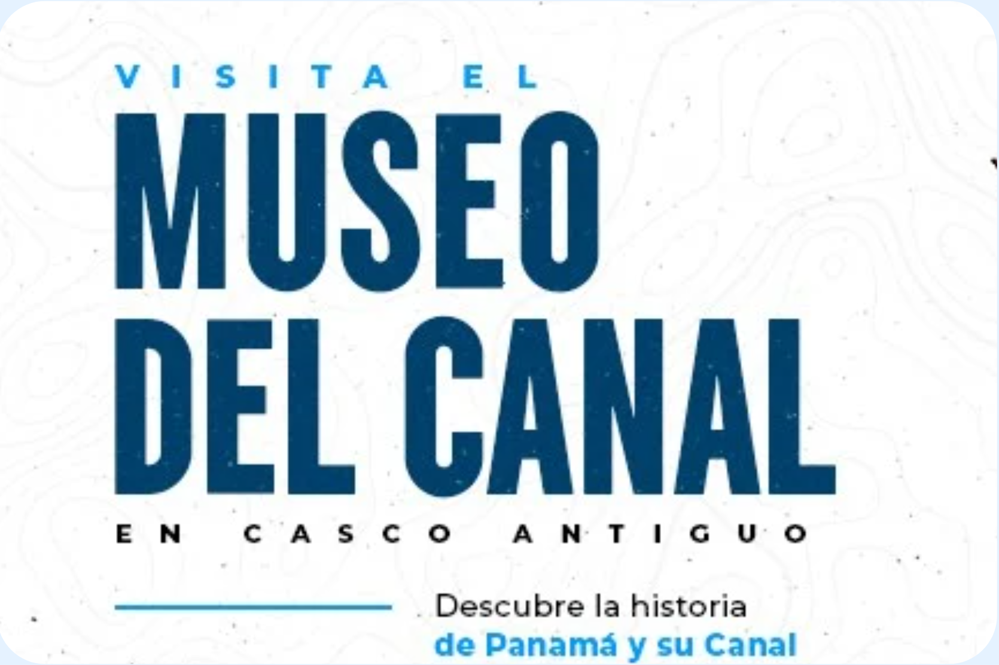
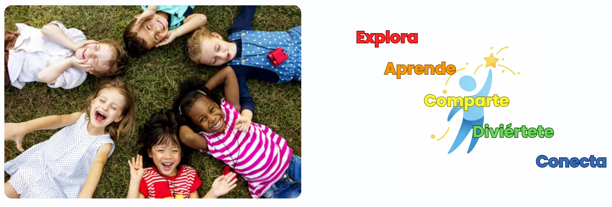

Biomuseo
Educativa

Cada salida busca brindar oportunidades para conocer nuevos espacios, fortalecer habilidades sociales, practicar la autonomía y disfrutar de actividades recreativas en ambientes preparados, con acompañamiento adecuado y atención a aspectos importantes como la comodidad sensorial, la estructura de la actividad y el bienestar emocional de cada participante.

Para adaptarnos a diferentes intereses y necesidades, contamos con distintos paquetes y opciones de excursión, con actividades variadas y diferentes rangos de precios, permitiendo que cada familia pueda elegir la experiencia que mejor se ajuste a sus preferencias. Entre las opciones podrás encontrar salidas recreativas, visitas educativas, actividades al aire libre y experiencias grupales guiadas.
Educativa

Recreativa

Explorativa
Educativa

Recreativa

Explorativa

Educativa

Recreativa

Explorativa
Cada paquete incluye información detallada sobre el destino, duración, nivel de apoyo disponible, cantidad de acompañantes, recomendaciones previas y características del entorno, para que puedas planificar con tranquilidad y elegir la experiencia más adecuada.
Con el objetivo de mantener un ambiente organizado, seguro y cómodo para todos, cada gira contará con un cupo máximo de 9 niños, y cada participante deberá asistir acompañado por un adulto responsable (mamá, papá, tutor o cuidador). Además, cada salida estará acompañada por el equipo de Lumen, encargado de coordinar la experiencia, brindar apoyo durante toda la actividad y atender cualquier necesidad que pueda surgir, asegurando una atención más cercana y personalizada para cada familia.
Nuestro objetivo es que cada salida sea mucho más que una excursión: una oportunidad para explorar, aprender, compartir y crear recuerdos positivos en un ambiente inclusivo, comprensivo y pensado para el bienestar de cada participante.

Si deseas organizar una gira o excursión personalizada, puedes ponerte en contacto con nosotros. Cuéntanos qué lugar te gustaría visitar, tus necesidades o preferencias, y trabajaremos para ayudarte a crear una experiencia adecuada y segura. Te responderemos lo más pronto posible para brindarte toda la información y acompañarte en la planificación.